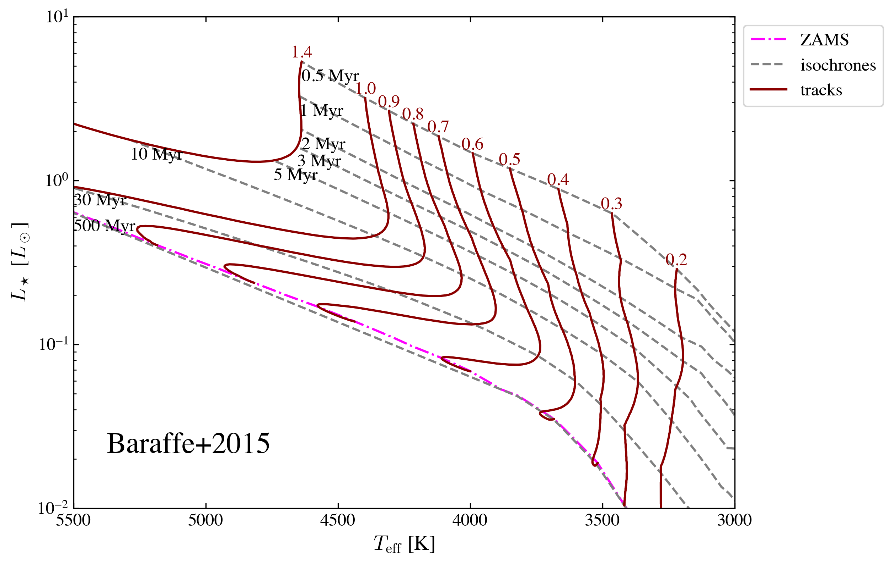
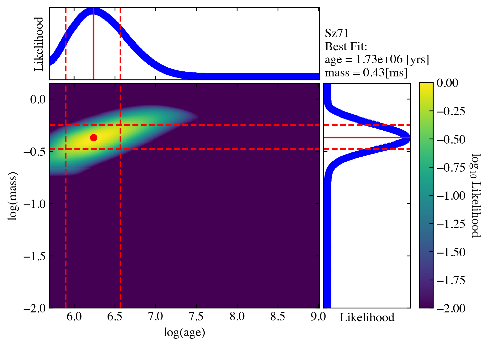

2. Using Customized Isochrones¶
Isochrone Matrix¶
In ysoisochrone, we use matrix from numpy to handle the isochrone data. They are stored by default in the folder called ./isochrone_data/xxx_matrix.mat'. If you have already gone through the first two tutorials successfully, the code should already have downloaded and formated the isochrone data for both Baraffe2015 and Feiden2016 pre-main-sequence stellar evolutionary tracks. You can find the files there under the folder isochrone_data (the two files are named
'Baraffe_AgeMassGrid_YSO_matrix.mat' and 'Feiden_AgeMassGrid_YSO_matrix'). By default where you are running the code (or this notebook).
The .mat files can be read directly into the Isocrhone class by using the customize option, and lets take the Baraffe track as an example:
[ ]:
import ysoisochrone
isochrone = ysoisochrone.isochrone.Isochrone()
mat_file_dir = './isochrones_data/Baraffe_AgeMassGrid_YSO_matrix.mat'
isochrone.set_tracks('customize', load_file=mat_file_dir)
1
Then we can plot this track that I read in
[ ]:
import matplotlib.pyplot as plt
fig, ax = plt.subplots(figsize=(8, 6))
ysoisochrone.plotting.plot_hr_diagram(isochrone, ax_set=ax,
ages_to_plot=[0.5e6, 1.0e6, 2.0e6, 3.0e6, 5.0e6, 10.0e6, 30.0e6, 500.0e6],
masses_to_plot=[0.2, 0.3, 0.4, 0.5, 0.6, 0.7, 0.8, 0.9, 1.0, 1.39],
xlim_set=[5500, 3000], ylim_set=[0.01, 10.0])
ax.annotate('Baraffe+2015', xy=(0.05, 0.1), xycoords='axes fraction', ha='left', va='bottom', fontsize=20)
plt.show()

The Isochrone class has three Attributes:
isochrone.log_ageas the grid for thelog10(age)in the unit ofyr. You can think this as the x-axis.isochrone.massesas the grid for themassesin the unit ofsolar masses. You can think this as the y-axis.isochrone.logtloglas a 2D grid forlog10(Teff)in the unit ofKandlog10(Luminosity)in the unit ofsolar luminosity.
So to have a 2D grid for teff and luminosity, you can use
[ ]:
# Convert isochrone logtlogl data to Teff and L/Lo
teff_iso = 10**isochrone.logtlogl[:, :, 0] # Teff
lum_iso = 10**isochrone.logtlogl[:, :, 1] # L/Lo
Then the first term is for age, and second term is for mass. So to get the constant age lines or mass lines, you can use:
[ ]:
import numpy as np
age = 1.5e6
idx_age = np.nanargmin(np.abs(isochrone.log_age - age)) # Find closest age
teff_thisage = teff_iso[idx_age, :]
lum_thisage = lum_iso[idx_age, :]
mass = 1.0
idx_mass = np.nanargmin(np.abs(isochrone.masses - mass)) # Find closest mass
teff_thismass = teff_iso[:, idx_mass]
lum_thismass = lum_iso[:, idx_mass]
Make your own isochrone matrix¶
The read in .mat file (such as Baraffe_AgeMassGrid_YSO_matrix.mat) also has these three components (log_age, masses, logtlogl), and they are basically the same thing as stored in the file .mat by numpy.
We utilized meshgrid to create the grid from the original data. For example, to prepare the Baraffe grid. (all the code below is wrapped up in isochrone.load_baraffe2015_tracks, and isochrone.prepare_baraffe_tracks)
(i) First we download the original file from their website¶
‘BHAC15_tracks+structure’ should have already been downloaded to ./isochrones_data/Baraffe2015/
(ii) Then, read in the file.¶
Because the data formats are different for different stellar evolutionary models. So you might need to figure our by yourself on how to read them. But here we parepared a few functions in the ysoisochrone.utils for some of them, including
read_baraffe_file; read_feiden_trk_file; read_parsec_v1p2_dat_file; read_parsec_v2p0_tab_file
and so on. See all models here.
so for the Baraffe tracks, we can use
[ ]:
import os
# define the data dir
isochrones_data_dir = os.path.join(os.getcwd(), 'isochrones_data')
input_file = os.path.join(isochrones_data_dir, 'Baraffe2015', 'BHAC15_tracks+structure')
# Read the original BHAC15 tracks file
data_points = ysoisochrone.utils.read_baraffe_file(input_file)
The data_points are a long array of [mass, log_age, teff, log_luminosity] data points. They are the original points provided by different stellar evolutionary models.
NOTE In short, to use your customized isochrones, the only work for you is to create this formated data_points array. After this, ysoisochrone will have the functions to do all of remaining work.
(iii) Create meshgrid and save¶
Then we utilize meshgrid to sample the original data points to have a formmated grid.
[ ]:
# Create meshgrid and interpolate the data onto the grid
masses_i, log_age_i, logtlogl_grid, masses_grid, log_age_grid = ysoisochrone.utils.create_meshgrid(data_points)
# Save the parsed data to a .mat file
output_mat_file = os.path.join(isochrones_data_dir, 'Your_matrix_Baraffe_AgeMassGrid_YSO_matrix.mat')
ysoisochrone.utils.save_as_mat(masses_i, log_age_i, logtlogl_grid, output_mat_file)
print(f"File saved as: {output_mat_file}")
Data saved to /Users/dingshandeng/github/ysoisochrone/tutorials/isochrones_data/Your_matrix_Baraffe_AgeMassGrid_YSO_matrix.mat
File saved as: /Users/dingshandeng/github/ysoisochrone/tutorials/isochrones_data/Your_matrix_Baraffe_AgeMassGrid_YSO_matrix.mat
Here the masses_i, log_age_i, logtlogl_grid are the three variables to be saved and they are the three attributes for Isochrone class. The masses_grid, log_age_grid are the 2D grid points for mass and log_age. They could be useful to check the read in and outputs.
There are also a few options you could use in the create_meshgrid, such as change the range for age: min_age (default 0.5 Myrs), max_age (default 1000 Myrs); range for mass: min_mass (default 0.0 Msun), max_mass (default 7.5 Msun); as well as the interpolation_method (default is linear).
NOTE in the future version, we will add the feature of finding the curve of zero-age-main-sequence from the track, so the grid point beyond that will be removed.
Then, to use this customized track to derive age and masses, you can call
[ ]:
import pandas as pd
# Set up a DataFrame in Python script
# For this target Sz71, values are from Alcala+2017,
# and corrected later with the Gaia DR3 distance in Manara+2023
df_prop_t = pd.DataFrame({
'Source': ['Sz71'],
'Teff[K]': np.array([3632.0]),
'e_Teff[K]': np.array([167.0]),
'Luminosity[Lsun]': np.array([0.327]),
'e_Luminosity[Lsun]': np.array([0.1420])
})
# find the best-fit results
best_logmass_output_t, best_logage_output_t, _, _, _ =\
ysoisochrone.bayesian.derive_stellar_mass_age(df_prop_t, model='customize', plot=True,
isochrone_mat_file=output_mat_file, verbose=True)
0%| | 0/1 [00:00<?, ?it/s]
Working on: Sz71
Adopted the customize track from /Users/dingshandeng/github/ysoisochrone/tutorial_notebooks/isochrones_data/Your_matrix_Baraffe_AgeMassGrid_YSO_matrix.mat.
sum of Lmass 100.00045650681574
the last index of Lmass 4.3919862335289363e-100
sum of Lmass array 52.5797632336972
the last index of Lmass array 1.0000000000000002
check the sum of confidence interval (default 0.68)
0.6740296309141199

100%|██████████| 1/1 [00:00<00:00, 4.14it/s]
Results for target: Sz71
Best Mass: 0.43 [Msun], Age: 1.73e+06 [yrs]